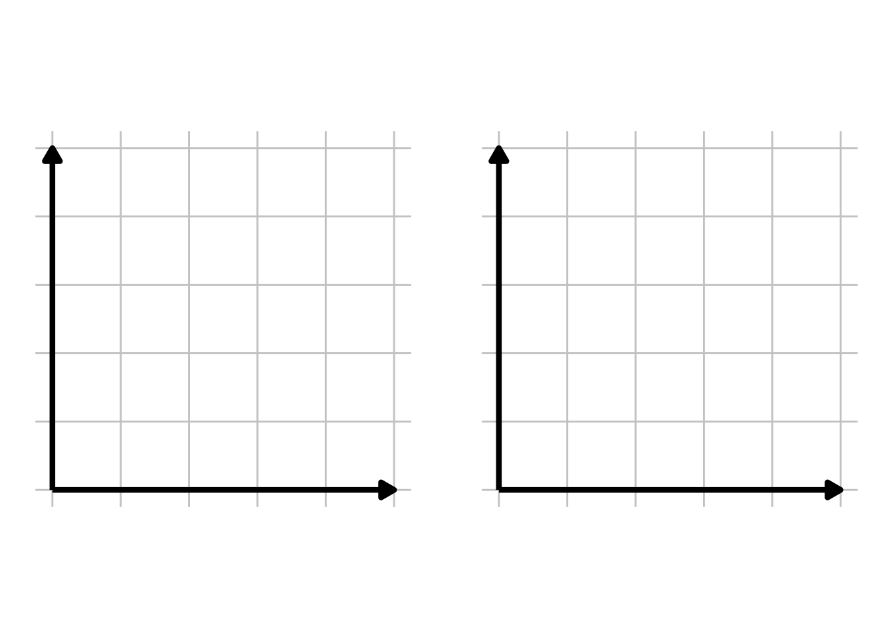
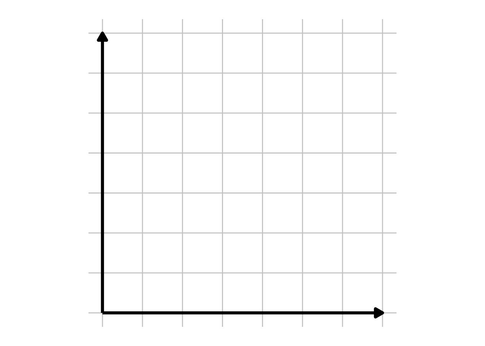
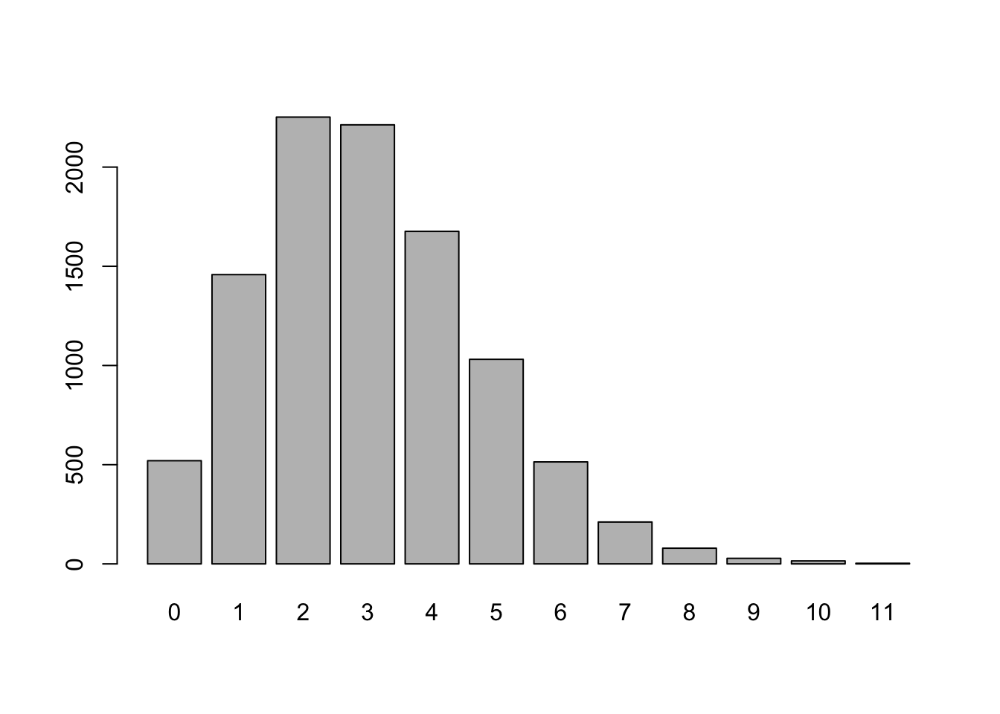
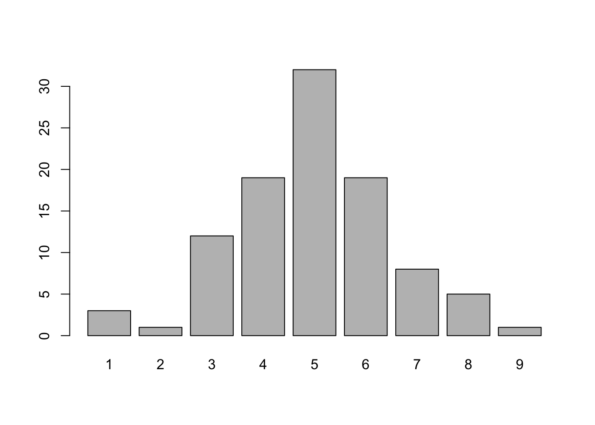

Chapter 3 Discrete Random Variables
In this chapter, we’ll explore random variables and their associated probability distributions, with a focus on discrete random variables. These concepts are the backbone of probability theory, enabling us to model and analyze uncertainty. We’ll also briefly cover the differences between discrete and continuous random variables—discrete variables take on specific, countable values, while continuous variables can assume any value within a range.
3.1 Random Variables
Definition 3.1 For a given sample space \(\Omega\) of an experiment, a random variable (RV) is a rule that assigns a number to each outcome in \(\Omega\). Mathematically, a random variable is a function with the sample space as its domain and the set of real numbers as its range.
Definition 3.2 A discrete random variable is a random variable whose possible values either constitute a finite set or a countably infinite set.
Definition 3.3 A continuous random variable is a random variable whose possible values are uncountably infinite or defined over an interval. Note: \(P(X=c)=0\) for a continuous random variable \(X\) and a constant \(c\).
Example 3.1 For the following cases, determine whether the random variable is discrete or continuous and state the sample space, \(\Omega\).
Roll a fair six-sided die. Let \(X\) be the number on the top of the die.
Pick a random person and let \(Y\) be the number of keys in their pocket.
Suppose a student is given 50 minutes to complete an exam. Let \(Z\) be the amount of time it takes the student to complete the exam.
3.2 Probability Distributions for Discrete Random Variables
Definition 3.4 The probability mass function (pmf) or probability distribution of a discrete random variable \(X\) is defined for every number \(x\) by \(p(x) = P(X=x)\).
Note: \(\sum_{x \in X} p(x) = 1\)
Definition 3.5 The cumulative distribution function (CDF) \(F(x)\) of a discrete random variable \(X\) with pmf \(p(x)\) is defined for every number x by: \(F(x) = P(X \le x) = \sum_{y:y \le x} p(y)\)
\(F(x)\) gives you the probability that a random variable will be at most equal to \(x\).
\(F(x)\) must be right-continuous and non-decreasing.
\(F(x)\) must satisfy two limit laws:
- \(\lim_{x \to -\infty} F(x) = 0\)
- \(\lim_{x \to -\infty} F(x) = 0\)
- \(\lim_{x \to \infty} F(x) = 1\)
- \(\lim_{x \to \infty} F(x) = 1\)
Theorem 3.1 For any two numbers a and b with \(a \le b\), \(P(a \le X \le b ) = F(b) - F(a^-)\).
Example 3.2 Roll a fair six-sided die. Let \(X\) be the number of the top of the die. Find the pmf and cdf of \(X\) and sketch them.
Example 3.3 Flip two fair coins. Let \(Y\) be the number of coins that land on heads. Find the pmf and cdf of \(Y\) and sketch both.

3.3 Expected Values (Means)
Definition 3.6 Let X be a discrete random variable with set of possible outcomes \(D\) and pmf \(p(x)\). The expected value or mean value of \(X\), denoted \(E[X]\) or \(\mu\), is: \[E[X] = \sum_{x \in D} x \cdot p(x)\]
Theorem 3.2 \(E[h(X)] = \sum p(x) \cdot h(x)\)
Theorem 3.3 \(E[aX+b] = a \cdot E[X] + b\)
Definition 3.7 Let X have a pmf \(p(x)\) and expected value \(\mu\). Then the variance of X, denoted by \(Var(X)\) or \(\sigma^2\), is: \[Var(X) = \sigma^2 = \sum_{x \in D} (x-\mu)^2 \cdot p(x) = E[(X-\mu)^2]\]
Definition 3.8 The standard deviation, denoted SD or \(\sigma\) is: \[SD(X) = \sigma = \sqrt{Var(X)}\]
Theorem 3.4 \(Var(X) = E[X^2] - (E[X])^2\)
Theorem 3.5 \(Var(aX+b) = a^2 \cdot \sigma^2\)
Example 3.4 Roll a fair six-sided die. Let \(X\) be the number of the top of the die. Find \(E[X]\) and \(Var(X)\).
| \(x\) | 1 | 2 | 3 | 4 | 5 | 6 | \(\Sigma\) |
| \(p(x)\) | |||||||
| \(x*p(x)\) | |||||||
| \(x^2*p(x)\) |
Example 3.5 Flip two fair coins. Let \(Y\) be the number of coins that land on heads.\ Find \(E[Y]\) and \(Var(Y)\).
| \(x\) | 0 | 1 | 2 | \(\Sigma\) |
| \(p(x)\) | ||||
| \(x*p(x)\) | ||||
| \(x^2*p(x)\) |
Example 3.6 Suppose \(Z = 3 \cdot Y + 2\), where \(Y\) is defined above. Find \(E[Z]\) and \(Var(Z)\).
3.4 Bernoulli and Binomial Random Variables
Definition 3.9 Suppose \(p(x)\) depends on a quantity that can be assigned any one of a number of possible values, with each different value determining a different probability distribution. Such a quantity is called a parameter of the distribution.
Definition 3.10 The collection of all probability distributions for different values of the parameter is called a family of probability distributions.
Definition 3.11 A Bernoulli(\(p\)) random variable \(X\) is a discrete random variable with two possible outcomes (typically, these outcomes are 0 and 1).
The PMF of a Bernoulli(\(p\)) is:If \(X \sim \text{Bernoulli(}p)\)) random variable, then \(E[X] = p\) and \(Var(X) = p(1-p)\)
Example 3.7 Show that if \(X\) is a Bernoulli(\(p\)) random variable, then \(E[X] = p\) and \(Var(X) = p(1-p)\).
Definition 3.12
\(X\) is a Binomial(\(n\),\(p\)) random variable if \(X\) is a discrete random variable that satisfies the following conditions:The PMF of a Binomial(\(n,p\)) is:
\(p(x) = \binom{n}{x} p^x (1-p)^{n-x}, x = 0, 1, 2, \ldots, n\)
If \(X \sim \text{Binomial(}n,p)\) random variable, then \(E[X] = np\) and \(Var(X) = np(1-p)\).
Example 3.8 Basketball player Lebron James has a career free throw percentage of 73.1% (i.e., there’s a 73.1% chance he will make a basket from the free throw line). Suppose Lebron has six free throw attempts in a game and assume all free throw shots are independent. Answer the following questions.
- On average, how many free throws is Lebron expected to make? What is the variance?
- Let \(X\) be the number of free throws that Lebron makes. Find and sketch the pmf of \(X\).
| \(x\) | 0 | 1 | 2 | 3 | 4 | 5 | 6 |
| \(p(x)\) |

- What is the probability that Lebron makes at least five shots?
3.5 Geometric, Discrete Uniform, and Poisson Random Variables
Definition 3.13 \(X\) is a Geometric(\(p\)) random variable is \(X\) is a discrete random variable with the following properties.
The PMF of a Geometric(\(p\)) is:
\(p(x) = p(1-p)^{x-1}, x = 1, 2, 3, \ldots\)
If \(X \sim \text{Geometric(}p)\) random variable, then \(E[X] = \frac{1}{p}\) and \(Var(X) = \frac{1-p}{p^2}\).
Example 3.9 Basketball player Lebron James has a career free throw percentage of 73.1%. Suppose he takes shots until makes one. Calculate the probability that 3 or more shots will be required to make his first shot.
Definition 3.14 \(X\) is a Discrete Uniform(a,b) random variable is \(X\) is a discrete random variable such that the outcomes \(a, a+1, \ldots, b\) are equally likely. Let \(n = b-a+1\).
The PMF of a Uniform(\(a,b\)) is:
\(p(x) = \frac{1}{n}, x = a, a+1, \ldots, b\)
If \(X \sim \text{Uniform(}a,b)\) random variable, then \(E[X] = \frac{a+b}{2}\) and \(Var(X) = \frac{(b-a+1)^2-1}{12}\).
Example 3.10 Using the formulas above, calculate the expected value and variance of a fair six-sided die roll.
Definition 3.15 A Poisson random variable is a discrete random variable with parameter \(\lambda\) and the following pmf: \[p(x)=\frac{e^{-\lambda} \lambda^x}{x!}, x = 0, 1, 2, \ldots \]
If \(X \sim \text{Poisson(}\lambda)\) random variable, then \(E[X] = \lambda\) and \(Var(X) = \lambda\).
Note: Poisson random variables are often used to model the number of events that occur in a finite period of time.
Example 3.11 Jihan is going fishing and on average, she catches 2 fish per day. Assume that the time between successive fish caught is independent. What is the probability that Jihan catches less than 3 fish in a given day?
3.6 R Companion for Chapter 3
We can calculate probabilities for common discrete random variables easily in R. There are two parts to finding probabilities using the PMF or CDF.
R uses four prefixes to reference difference elements of a random variable. These are:
p for “probability”, the cumulative distribution function (CDF)
q for “quantile”, the inverse CDF
d for “density”, the probability mass function (PMF)
r for “random”, a random variable having the specified distribution
In addition, we have suffixes for common random variables: binom (binomial), pois (Poisson), and geom (Geometric). Note that geom is defined in terms of failures instead of total trials.
For instance, suppose that \(X \sim Binomial(n=10,p=0.5)\), that is, X is a binomial random variable that counts the number of heads in 10 fair coin flips. We can calculate P(X=5), the probability of exactly 5 heads in 10 fair coin flips, as follows.
## [1] 0.2460938If we want the probability of at most five heads in 10 coin flips, \(P(X \leq 5)\), we can use ***pbinom}.
## [1] 0.6230469Now, suppose that \(Y \sim Poisson(\lambda = 2)\) and we want to know \(P(Y > 3)\). First, we note that \(P(Y > 3) = 1 - P(Y \leq 3)\).
## [1] 0.1428765If we use the prefix r, we can generate simulated data according to a particular random variable. Let’s generate 10,000 observations from a Poisson distribution with \(\lambda=3\), look at the first few values, and then calculate some summary statistics. This will require us to use the rpois function to generate random Poisson data.
## [1] 3 6 2 4 1 4## [1] 3.0088## [1] 3.047827From theory, we know that if \(Y \sim Poisson(\lambda=3)\), then \(E[Y] = Var(Y) = \lambda = 3\). Our simulated results are pretty close to the theoretical values.
## rand.data
## 0 1 2 3 4 5 6 7 8 9 10 11
## 520 1458 2252 2213 1676 1031 514 211 79 28 15 3
How would you describe the distribution above? It seems to be asymmetric, skewed right (tail on the right), and unimodal.
Example 3.12 Let’s simulate some data and calculate the probabilities in the sample. Suppose we flip 10 fair coins and we count the number of heads. Let X be the number of heads. We can model X as a binomial random variable with parameters n=10 (number of coin flips) and p=0.5 (fair coin). Let’s simulate running this experiment 100 times.
## coins
## 1 2 3 4 5 6 7 8 9
## 3 1 12 19 32 19 8 5 1
In our simulation, what was the probability that 5 heads occurred out of 10 flips? In the above table, we can see we got 5 heads on 32 of the 100 simulations, so \(P(5) = 32/100 = 0.32\).\
We could also calculate as follows:
## [1] 0.32What is the probability that we got more than 7 heads?
## [1] 0.06